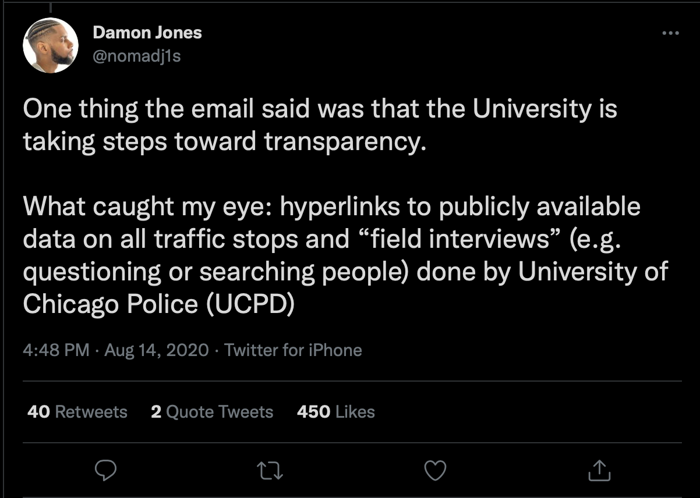
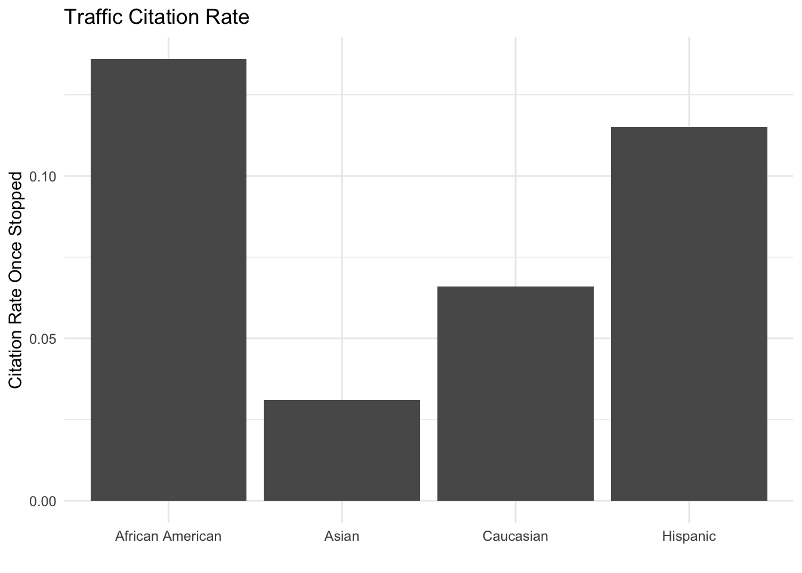
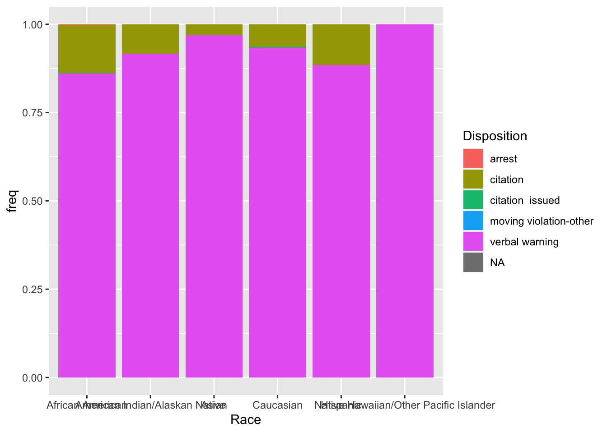
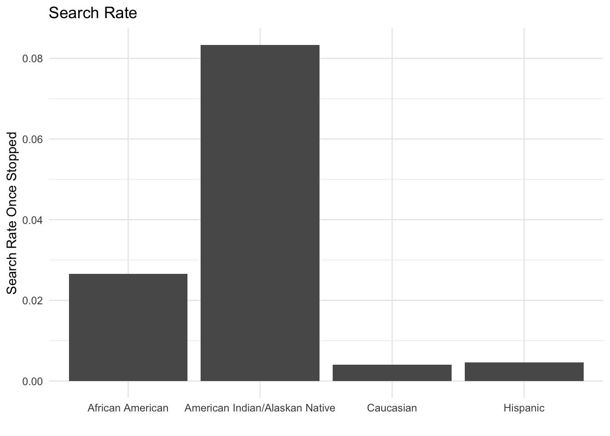

grouped_data <- traffic_data %>%
group_by(Race, Gender)Module 7: Grouped Analysis
In this lesson, we learn how to use the dplyr verb group_by() to conduct grouped analysis.
Grouped Analysis
Download a copy of Module 7 slides
Download data for Module 7 lab and tutorial
Lab 7
In this lab, you will work with data_traffic.csv.
General Guidelines:
You will encounter a few functions we did not cover in the lecture video. This will give you some practice on how to use a new function for the first time. You can try following steps:
- Start by typing
?new_functionin your Console to open up the help page - Read the help page of this new_function. The description might be too technical for now. That’s OK. Pay attention to the Usage and Arguments, especially the argument
xorx,y(when two arguments are required) - At the bottom of the help page, there are a few examples. Run the first few lines to see how it works
- Apply it in your lab questions
It is highly likely that you will encounter error messages while doing this lab Here are a few steps that might help get you through it.
- Locate which line is causing this error first
- Check if you may have a typo in the code. Sometimes another person can spot a typo faster than you.
- If you enter the code without any typo, try googling the error message
- Scroll through the top few links see if any of them helps
- Try working on the next few questions while waiting for answers by TAs
Background and Data
Read the background and data section before lab.

Follow the tweet thread and you’ll see how Professor Damon Jones, of Harris, prepares and analyzes his data. In this lab, you’re going to follow his lead and dig into traffic stop data from the University of Chicago Police Department, one of the largest private police forces in the world.
Warm-up
Open a new Rmd and save it in your coding lab folder; if you downloaded the data, move your data file to your preferred data location.
In your Rmd, write code to load your packages. If you load packages in the console, you will get an error when you knit because knitting starts a fresh R session.
Load
data_traffic.csvand assign it to the nametraffic_data. This data was scrapped from the UCPD website and partially cleaned by Prof. Jones.Recall that
group_by()operates silently. Below I create a new data frame calledgrouped_data.
- How can you tell
grouped_datais different fromtraffic_data?
- How can you tell
- How many groups (Race-Gender pairs) are in the data? (This information should be available without writing additional code!)
- Without running the code, predict the dimensions (number of rows by number of columns) of the tibbles created by
traffic_data %>% summarize(n = n())andgrouped_data %>% summarize(n = n()).
- Without running the code, predict the dimensions (number of rows by number of columns) of the tibbles created by
- Now check you intuition by running the code.
- Use
group_by()andsummarize()to recreate the following table.
# A tibble: 6 × 2
Race n
<chr> <int>
1 African American 3278
2 American Indian/Alaskan Native 12
3 Asian 226
4 Caucasian 741
5 Hispanic 217
6 Native Hawaiian/Other Pacific Islander 4- Use
count()to produce the same table.
Moving beyond counts
- Raw counts are okay, but frequencies (or proportions) are easier to compare across data sets. Add a column with frequencies and assign the new tibble to the name
traffic_stop_freq.The result should be identical to Prof. Jones’s analysis on twitter.
Try on your own first. If you’re not sure how to add a frequency though, you could google “add a proportion to count with tidyverse” and find this stackoverflow post. Follow the advice of the number one answer. The green checkmark and large number of upvotes indicate the answer is likely reliable.
The frequencies out of context are not super insightful. What additional information do we need to argue the police are disproportionately stopping members of a certain group? (Hint: Prof. Jones shares the information in his tweets.)
For the problem above, your groupmate tried the following code. Explain why the frequencies are all 1.
traffic_stop_freq_bad <- traffic_data %>%
group_by(Race) %>%
summarize(n = n(),
freq = n / sum(n))
traffic_stop_freq_badNow we want to go a step further. Do outcomes differ by race? In the first code block below, I provide code so you can visualize disposition by race. “Disposition” is police jargon that means the current status or final outcome of a police interaction.
citation_strings <- c("citation issued", "citations issued",
"citation issued" )
arrest_strings <- c("citation issued, arrested on active warrant",
"citation issued; arrested on warrant",
"arrested by cpd", "arrested on warrant",
"arrested","arrest")
disposition_by_race <- traffic_data %>%
mutate(Disposition = str_to_lower(Disposition),
Disposition = case_when(Disposition %in% citation_strings ~ "citation",
Disposition %in% arrest_strings ~ "arrest",
TRUE ~ Disposition)) %>%
count(Race, Disposition) %>% group_by(Race) %>%
mutate(freq = round(n / sum(n), 3))
disposition_by_race %>%
filter(n > 5, Disposition == "citation") %>%
ggplot(aes(y = freq, x = Race)) + geom_col() +
labs(y = "Citation Rate Once Stopped", x = "", title = "Traffic Citation Rate") +
theme_minimal()
Let’s break down how we got to this code. First, I ran traffic_data %>% count(Race, Disposition) and noticed that we have a lot of variety in how officers enter information into the system. I knew I could deal with some of the issue by standardizing capitalization.
- In the console, try out
str_to_lower(...)by replacing the … with different strings. The name may be clear enough, but what doesstr_to_lower()do?
- In the console, try out
After using mutate with str_to_lower(), I piped into count() again and looked for strings that represent the same Disposition. I stored terms in character vectors (e.g. citation_strings). The purpose is to make the case_when() easier to code and read. Once I got that right, I added frequencies to finalize disposition_by_race.
- To make the graph, I first tried to get all the disposition data on the same plot.
disposition_by_race %>%
ggplot(aes(y = freq, x = Race, fill = Disposition)) +
geom_col()
By default, the bar graph is stacked. Look at the resulting graph and discuss the pros and cons of this plot.
I decided I would focus on citations only and added the
filter(n > 5, Disposition == "citation")to the code. What is the impact of filtering based onn > 5? Would you make the same choice? This question doesn’t have a “right” answer. You should try different options and reflect.Now, you can create a similar plot based called “Search Rate” using the Search variable. Write code to re-produce this plot.

Well done! You’ve learned how to conduct grouped analysis using real-world data!
Want to improve this tutorial? Report any suggestions/bugs/improvements on here! We’re interested in learning from you how we can make this tutorial better.